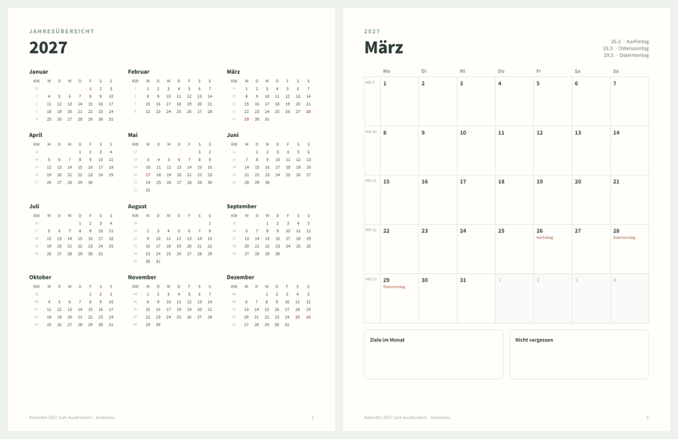

KOSTENLOS · PDF · 2027
Kalender 2027 zum Ausdrucken mit KW und Feiertagen
Ein PDF mit 13 Seiten: die Jahresübersicht auf einer Seite und eine ganze Seite für jeden Monat 2027, mit Kalenderwochen (KW), den bundesweiten Feiertagen und Platz zum Eintragen. Woche von Montag bis Sonntag, US-Letter-Format (druckt auf A4 mit „An Seite anpassen“). Ohne E-Mail und ohne Anmeldung.
Kalender 2027 herunterladen (PDF, 13 Seiten)Drucke nur die Monate, die du brauchst, so oft du willst.

Bundesweite Feiertage 2027
| Datum | Feiertag |
|---|---|
| Fr, 1.1. | Neujahr |
| Fr, 26.3. | Karfreitag |
| Mo, 29.3. | Ostermontag |
| Sa, 1.5. | Tag der Arbeit |
| Do, 6.5. | Christi Himmelfahrt |
| Mo, 17.5. | Pfingstmontag |
| So, 3.10. | Tag der Deutschen Einheit |
| Sa, 25.12. | 1. Weihnachtstag |
| So, 26.12. | 2. Weihnachtstag |
Dazu kommen Feiertage, die nur in einzelnen Bundesländern gelten (zum Beispiel Heilige Drei Könige, Fronleichnam am 27. Mai, Reformationstag, Allerheiligen). Schulferien sind nicht eingetragen: trage die Ferien deines Bundeslands selbst ein. 2027 beginnt an einem Freitag, ist kein Schaltjahr und hat 52 Kalenderwochen.